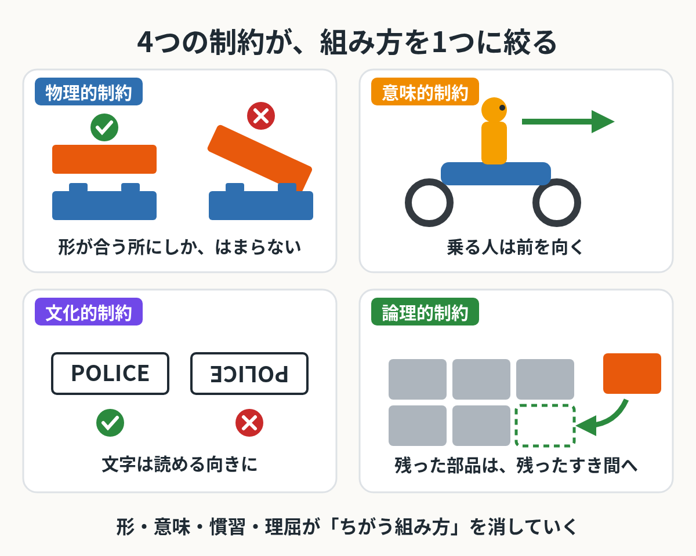
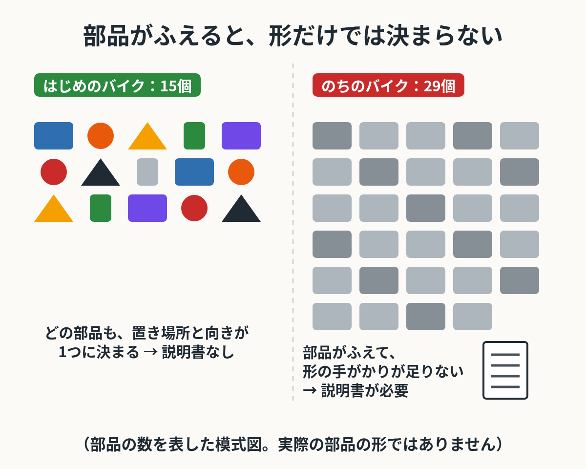

第10回 おもちゃと子ども向け
部品の形が組み方を決めるレゴのバイク（説明書のいらない組み立て）


何がどう行為を誘っているか
ノーマンは『誰のためのデザイン？』で、レゴの小さな警察バイクを例に出しています。部品は15個。説明書も完成した姿も見せずに組み立ててもらっても、多くの大人が正しく組み上げられたそうです。
手がかりになったのは、部品そのものです。でっぱりと穴はかみ合う向きでしか固定できず、形が合わない場所にはそもそもはまりません。ノーマンはこうした「できることを絞りこむ手がかり」を制約（constraint）と呼び、4種類に分けました。形で決まる物理的制約、乗る人は前を向くといった意味的制約、POLICEの文字は読める向きにし、赤いライトは後ろにつけるといった文化的制約、そして「残った部品は残ったすき間へ」という論理的制約です。
アフォーダンスやシグニファイアが「何ができるか」を伝えるのに対し、制約は「何ができないか」を示して、選び方を1つに近づけます。部品の形そのものが、組み方を教える手がかりになっているわけです。
惜しい例・悪い例との対比
ノーマンは同じ本の後半で、のちに出たレゴのバイクも紹介しています。部品は29個にふえ、ノーマン自身も説明書がないと組み立てられなかったと書いています。はじめのバイクは、どの部品も置き場所と向きが1つに決まるだけの制約がそろっていました。部品がふえると、その手がかりが足りなくなったのです。ノーマンはこれを、機能や部品を足しつづけて使いにくくなる「creeping featurism（機能の忍び寄る肥大）」の例として挙げています。
どこにでもはまる部品は、形が選び方を絞ってくれません。見た目のそっくりなスイッチがずらりと並ぶ操作盤で迷うのと、同じしくみです。
使いどころのひとこと
説明を足す前に、まちがった選び方を形で消せないかを考えてみてください。授業では、少ない部品のブロックを配って説明書なしで組んでもらうと、4つの制約を体験として話せます。スライドやWebのフォームでも、入力欄の形や選べる値を先にしぼっておくと、注意書きを1行減らせます。